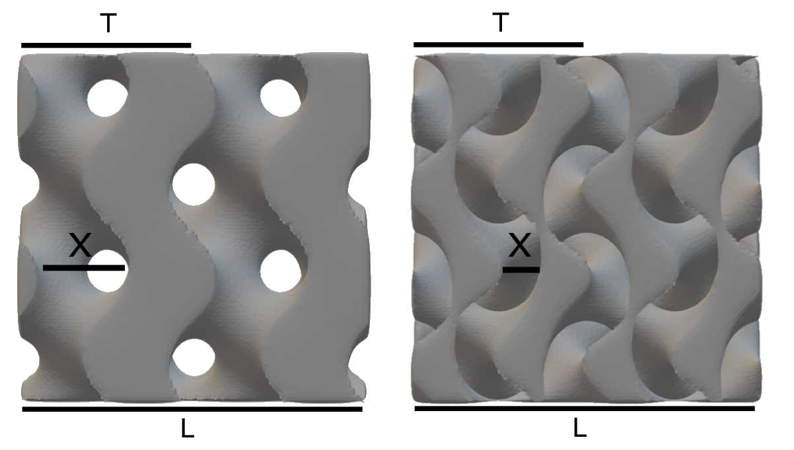
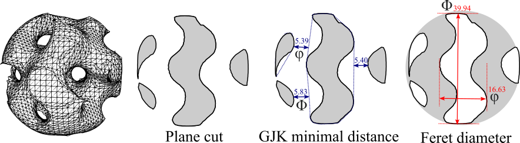

Tips
What is the value of \(w\) used for pore size \(x\)?
The angular frequency (\(w\)) control the number of repetitive TPMS units:
where \(T\) = period or length of a unit cell, \(N\) = the number of unit cells, and \(L\) = the length of input 3D mesh.
For example, if we want \(N=2\) in cube20mm.stl (\(L=20mm\)), \(w\) will be \(2\pi*2/20 = \pi/5\)
(the unit of \(L\) has the same dimension with the input mesh).

The image show the Gyroid (left) and Double-Gyroid (right) with \(w=\pi/5\) and \(t=0\). The pore size \(x \approx T/2\) for Gyroid and \(T/4\) for Double-Gyroid. Then,
If we want a gyroid with \(x=5mm\), we will set \(w=\pi/5\).
Example:
./Scaffolder cube20mm.stl out.ply -c 3.14159 -g 100 -n tubulat_g_ab
cube20mm.stl (\(L=20mm\)) with theoretical \(N=10\)
How to reduce the size of 3D mesh?
Scaffolder uses the Quadratic decimation from MeshLab to reduce the result 3D mesh with an option --size_optimize (-z).
For example, the following command is used to generate a gyroid with 50% decimation, thus resulting the 50% less faces:
./Scaffolder input.stl out.stl gyroid,0.6283,0.61,200 -z 0.5
Note
You can manually reduce the size by using MeshLab: Filter > Remeshing, Simplification, and Reconstruction > Simplification: Quadric Edge Collapse Decimation
How to intrepret the output from console?
Suppose that the following command was used:
.\Scaffolder.exe .\cube20mm.stl out.stl gyroid,0.6283,0.61,100
Then this is an output generated by program with default options (--format default)
1 2 3 4 5 6 7 8 9 10 11 12 13 14 15 16 17 18 19 20 21 22 23 24 25 26 27 28 29 30 31 32 33 34 35 36 37 38 39 40 41 42 43 44 45 46 47 48 49 50 51 52 | |
Parameters summary (Lines 1-25)
| Line | Parameter (value) | Detail | Refer to a process at |
|---|---|---|---|
| 2 | Input file (cube20mm.stl) | Path to input file | Line 26,Line 28 |
| 3 | Output file (out.stl) | Path to output file | Line 51 |
| 4 | Surface (gyroid) | TPMS types | Line 30 |
| 5 | Coff (0.6283) | Angular frequency (\(w\)) | Line 30 |
| 6 | Isolevel (0.61) | Isolevel (\(t\)) | Line 30 |
| 7 | Grid size (100) | Grid Resolution | Line 26 |
| 8 | Grid offset (3) | Padding size adding to grid | Line 26 |
| 9 | Shell (0) | Depth of solid shell | Line 30 |
| 10 | Autoclean (True) | Clean 3D Mesh | Line 34 |
| 11 | Minimum diameter (25%) | Minimal diameter (% of diagonal length of bounding box) to classify the small components in cleaning process | Line 34 |
| 12 | Smooth step (5) | Steps to Laplacian smoothing | Line 35 |
| 13 | Fix self-intersect (False) | Whether the program should fix the self-intersect or not | Line 34 |
| 14 | Quadric Simplification (0) | % triangles reduction | NA |
| 15 | Analysis microstructure (False) | Report the pore size | NA |
| 16 | Slice grid (100) | \(k_{slice}\) (the number of slice layers) | NA |
| 17 | Nearest outer contours (4) | \(k_{polygon}\) | NA |
| 18 | Export microstructure (False) | Export the SVG of sliced layers | NA |
| 19 | Mean curvature (False) | Calculate the mean curvature | NA |
| 20 | Export JPEG (No) | Export sliced layer | NA |
| 21 | Axis (X) | Axis to slice 3D Mesh | NA |
| 22 | Build (True) | Generate 3D Mesh | Line 51 |
| 23 | Bounding Box ([0, 0, 0] [20, 20, 20]) | Two points of bounding box | Line 26 |
| 24 | Length ([20, 20, 20]) | \(\text{Length}\) of bonding box in [x, y, z] | Line 26 |
| 25 | Grid delta (0.2) | \(min(\text{Length})/\text{grid size}\) | Line 26 |
Grid Generation (Line 26)
The voxels were generated based on \(\text{Length}/\text{Grid delta} + 2(\text{Grid offset})\).
In this case, the grid size of (X, Y, Z) is \((20, 20, 20)/0.2 + 2(3) = (106, 106, 106)\)
and the total number of voxels is \(106\times106\times106=1191016\)
Winding number and SDF calculation (Line 28)
The winding number and SDF with \(106\times106\times106\) voxels was calculated based on vertices and faces from input file.
Surface Generation (Line 30)
By combining \(w\) (0.6283), \(t\) (0.61), implicit function (gyroid), and input SDF, the output SDF was constructed.
Surface visualization (Line 31)
The trigular mesh was generated from output SDF by dual marching cubes algorithm
Cleaning (Line 34)
If autoclean option is enabled, the trigular mesh was cleaned by VGClib.
Smoothing (Line 35)
The Laplacian smooth is used to fix the mis-shape faces from dual marching cube algorithm.
Topology properties (Line 37)
In order to fabricate with 3D printer, make sure that 3D mesh is watertight. Thus, the program asserts whether the 3D mesh is two-manifold or not. Moreover, the number non-manifold and border edges are reported, which should be zero to ensure the watertight property of the 3D mesh.
Scaffold properties (Line 46)
Finally, the scaffold property such as volume (\(\text{unit}^3\)), surface area (\(\text{unit}^2\)), porosity, and surface area ratio were reported.
How to intrepret the output from console? (2)
If the Analysis microstructure (-m) is added to the previous command:
.\Scaffolder.exe .\cube20mm.stl out.stl gyroid,0.6283,0.61,100 -m
an additional output from microstructure measurement will be reported (Line 47).
1 2 3 4 5 6 7 8 9 10 11 12 13 14 15 16 17 18 19 20 21 22 23 24 25 26 27 28 29 30 31 32 33 34 35 36 37 38 39 40 41 42 43 44 45 46 47 48 49 50 51 52 53 54 55 56 57 58 59 60 61 62 63 | |
Feret Diameter

Feret diameter, or caliper diameter, is a diameter of an object measured with a caliper. According to the above image, \(\upvarphi\) and \(\Phi\) are the minimum and maximum Feret diameter, respectively.
The minimum and maximum of Feret diameters are collected. The interquartile ranges (IQR) reported in Line 50-51 are formatted as [Min, Q1, Median, Q3, Max].